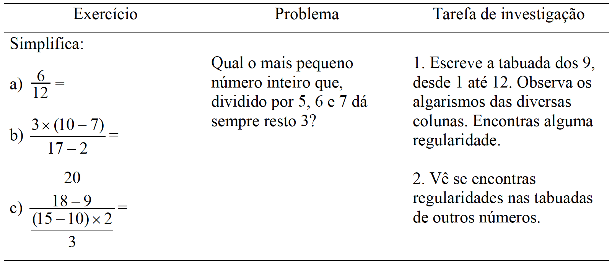

Explicações inicias para as análises
O Projeto Descobridores da Matemática iniciou-se em 2017, no Centro Pedagógico da Escola de Educação Básica e Profissional da Universidade Federal de Minas Gerais (CP/UFMG). Criado por uma equipe de professores que lecionava matemática em diferentes anos escolares do Ensino Fundamental, a ideia inicial do Projeto era a de promover um espaço para aqueles estudantes que apresentam afinidade com a área de Matemática e que nem sempre têm acesso a propostas que permitam o aprofundamento de seus estudos nessa área. Nesse sentido, a ideia era promover um contato com problemas matemáticos que tivessem como característica principal serem desafiadores, rompendo com a lógica dos exercícios escolares convencionais.
O Centro Pedagógico é um Colégio de Aplicação que tem como metas principais a construção de práticas de ensino inovadoras e a formação de professores. A proposta inicial do Projeto Descobridores se articula à primeira dessas metas, pois pretende desenvolver habilidades matemáticas por meio da resolução de problemas, favorecendo a apropriação de práticas matemáticas, de raciocínio lógico e de linguagem, por estudantes da Educação Básica. Os docentes do Centro Pedagógico que atuavam do 3° ao 5° ano do Ensino Fundamental e os professores do Instituto de Ciências Exatas da UFMG (ICEx) estabeleceram uma parceria, a fim de organizar um trabalho que articulasse práticas de ensino inovadoras com a formação docente. Nesse momento foram convidados para atuar como monitores nas ações do Projeto licenciandos do curso de Matemática.
Inicialmente, a principal ação do Projeto consistia na oferta de Grupos de Trabalho Diferenciados (GTDs) para estudantes que cursavam no Centro Pedagógico o Ensino Fundamental. Na organização curricular do CP, os GTDs estruturam-se num formato de oficinas e desenvolvem conteúdo de forma diferenciada. Os estudantes são organizados em grupos menores, com, no máximo, 15 estudantes, para que possam desenvolver temáticas diversas. Essa disciplina possibilita tanto o trabalho com assuntos de interesse dos educandos, quanto a imersão de licenciandos em práticas de ensino desenvolvidas na escola. A maioria dos GTDs é ministrada por estudantes de diferentes cursos de graduação que, orientados por docentes do CP, planejam e desenvolvem aulas junto aos estudantes do Ensino Fundamental1. Os monitores vinculados ao Projeto atuavam nesses GTDs, ministrando aulas semanais com duração de 1 hora e 20 minutos.
1GTDs acontecem em módulos de aula semanais e o tema e a metodologia são decididos por quem ministra. A parceria entre monitor e professor orientador possibilita a elaboração de estratégias didáticas e melhores formas para a abordagem do tema de cada oficina e de todo o GTD, dando, assim, liberdade para a criação e desenvolvimento da oficina.
Foi nesse contexto que o GTD Descobridores da Matemática se iniciou no CP nas turmas de 3º, 4º e 5º anos, no ano de 2017, sendo que em 2018 foram oferecidos GTDs para estudantes do 6º ano. Desde então, as atividades são desenvolvidas ininterruptamente na escola. Paralelamente à atuação em sala de aula, os monitores participam das reuniões mensais de formação com toda a equipe do Projeto e das reuniões semanais junto aos professores que orientam o trabalho em cada uma das turmas.
Em 2019, o Projeto Descobridores da Matemática ampliou suas frentes de atuação, realizando ações2 em duas escolas da Rede Municipal de Ensino de Belo Horizonte: a Escola Municipal Lídia Angélica e a Escola Municipal Belo Horizonte.
2Indicamos que, caso haja interesse, o leitor busque sobre extensão universitária, no documento de implementação que consta no site do Projeto Descobridores.
A Escola Municipal Belo Horizonte, localizada no bairro São Cristóvão, atende toda a comunidade no entorno da Pedreira Prado Lopes – uma população em vulnerabilidade social. A escola funciona em três turnos: pela manhã, atendendo ao primeiro e segundo ciclos; à tarde, com atendimento ao terceiro ciclo; e à noite, atendendo Educação de Jovens e Adultos.
A outra parceria, a Escola Municipal Lídia Angélica, está situada no bairro Itapoã e atende a um público que, socialmente, é mais diversificado e heterogêneo. Atualmente, a escola atende aos estudantes do 1º ao 9º ano do Ensino Fundamental, em 2 turnos. As oficinas do Descobridores da Matemática, na referida escola, tiveram início em fevereiro de 2019, com o término em julho do mesmo ano, contemplando duas turmas, uma de 4º ano e outra de 5º ano, do Ensino Fundamental.
As atividades aconteciam toda sexta-feira, de 13h às 15h horas, sendo que, no primeiro horário (de 13h às 14h), os desafios eram levados às crianças do 4º ano pela professora da turma acompanhada da dupla de monitores, estudantes da UFMG. No segundo horário, eram desafiados os aprendizes do 5º ano e as oficinas eram realizadas pela professora da turma e dois monitores da licenciatura.
Os monitores preparavam o material a ser trabalhado antes de cada atividade: a impressão dos desafios, a solução para a professora acompanhar e materiais concretos necessários àquela oficina.
Cada turma estava composta por 30 estudantes e era dividida em 3 grupos de 10 crianças: cada grupo acompanhado por um dos adultos. Um grupo ficava na sala de aula, outro ia para o pátio e o terceiro para o auditório ou outro espaço disponível naquele momento. Toda semana os professores e monitores propunham um rodízio nos grupos, mesclando seus integrantes e alternando os locais das atividades.
Nessas escolas, as ações foram desenvolvidas com estudantes do 4º e 5º ano do Ensino Fundamental, por meio de parceria com docentes que atuavam nessas turmas. Diferentemente do CP, onde as atividades eram desenvolvidas com grupos menores, nessas escolas, o Projeto era desenvolvido com toda a turma. As análises apresentadas neste material foram feitas a partir das resoluções de estudantes de turmas dessas três escolas e registradas por professores e monitores que atuavam no Projeto.
O cerne do Projeto se encontra na resolução de desafios e problemas e comunicação das estratégias utilizadas. Como aponta Diniz (2001, p. 89) “a Resolução de Problemas trata de situações que não possuem solução evidente e que exigem que o resolvedor combine seus conhecimentos e decida pela maneira de usá-los em busca de uma solução”. Dessa forma, resolver um problema ou desafio na perspectiva do Projeto Descobridores da Matemática não se limita a identificar uma operação ou um algoritmo por meio do qual seja possível chegar a uma resposta numérica. Pelo contrário, o que se pretende é romper com a lógica do que Diniz (2001) nomeia como “problemas convencionais” ou “problemas do livro-texto” que operam com a ideia de que os problemas servem para treinar uma habilidade matemática ensinada anteriormente. O que se espera com os desafios aqui apresentados é promover a construção de estratégias, que mobilizem habilidades e competências matemáticas, para solução de uma determinada situação.
Para exemplificar a diferença entre os tipos de atividade comumente propostos em sala de aula, reproduzimos o quadro elaborado por Ponte (2003).
Figura 1 - Exemplos de Atividades.
Fonte: Ponte, 2003, p. 4.
Para que os descobridores sejam mobilizados a realizar os desafios, uma série de mecanismos podem ser utilizados pelo professor, ou pelo adulto, que o estiver aplicando. Um primeiro aspecto que as análises mostram se refere ao fato de que é importante que o aplicador crie estratégias para envolver o educando na resolução daquele problema. Recursos diversos, como histórias, jogos, diálogos, dramatizações e outros, podem ser realizados a fim de engajar os aprendizes, sobretudo quando eles não têm familiaridade com esse tipo de prática.
Outro aspecto importante se relaciona à interpretação dos textos dos problemas. Smole e Diniz (2001) afirmam que é comum que docentes acreditem que a dificuldade que estudantes eventualmente podem ter para resolver problemas se refere ao fato de que eles não têm fluência na leitura em língua materna. Todavia, as autoras vão mostrar que essa dificuldade pode advir de um trabalho específico com o gênero textual “problema matemático”, não realizado com muita frequência por docentes que lecionam essa disciplina. Dessa maneira, é importante que os professores que ensinam matemática abordem, explicitamente, a leitura e a interpretação dos problemas. Pedir que as crianças contem novamente a história do problema, que identifiquem se há palavras desconhecidas, que localizem os principais dados do problema e da pergunta, são aspectos que podem auxiliar os estudantes no entendimento do desafio.
A leitura e a escrita matemática possibilitam o desenvolvimento da capacidade de interpretação dos aprendizes e, como sinaliza Beatriz D’Ambrosio (2017), é imprescindível para que o educando estabeleça uma melhor relação com a Matemática, despertando seu senso investigativo, tornando-o mais ativo e crítico na descoberta de novas maneiras de fazer Matemática, contribuindo, assim, para mudar sua forma de participação não só no ambiente de aprendizagem em que está inserido, como também, nas práticas sociais das quais participa.
O uso de materiais concretos para resolver os problemas é o terceiro aspecto destacado nas análises das resoluções dos desafios. Embora não seja uma obrigatoriedade, esse tipo de material chama a atenção das crianças e as motiva inicialmente na resolução. Ademais, permite uma visualização mais explícita de algumas situações, além de sugerir ideias sobre como resolver o problema, auxiliando na construção das estratégias por parte dos resolvedores.
Além de construir estratégias de resolução, quando trabalhados em sala de aula, os desafios possibilitam a comunicação em Matemática, entendida como a habilidade de expressar para outros o seu modo de raciocinar. Essa comunicação pode se dar de forma oral, escrita ou por meio de desenhos e diagramas. Todas essas formas são igualmente importantes no trabalho desenvolvido, pois permitem a mobilização de habilidades diversas. A possibilidade de trocas de ideias entre os estudantes é relevante nas práticas desenvolvidas, tanto por possibilitar a comparação e a construção coletiva das estratégias de resolução, como por criar situações de comunicação. Além disso, é por meio dessas estratégias que comunicamos cotidianamente os resultados dos problemas que resolvemos.
A resolução de problemas é apontada, em diferentes documentos curriculares oficiais, como um aspecto importante a ser trabalhado nas escolas. Os Parâmetros Curriculares Nacionais, indicavam como objetivo do Ensino Fundamental na área de matemática “resolver situações-problema, sabendo validar estratégias e resultados, desenvolvendo formas de raciocínio e processos, como intuição, indução, dedução, analogia, estimativa, e utilizando conceitos e procedimentos matemáticos, bem como instrumentos tecnológicos disponíveis” (BRASIL, 1997, p. 48). Nesse contexto, a discussão a respeito de resolução de problemas aparece como aspecto relevante a ser fomentado com os estudantes, constituindo-se um dos princípios que norteavam o ensino de matemática naquele momento.
Na mesma direção, a Base Nacional Comum Curricular (BNCC), implementada em 2019, aponta como uma das competências específicas de Matemática para o Ensino Fundamental:
É possível notar o alinhamento da proposta aqui apresentada com trechos dos documentos curriculares divulgados no Brasil. Cabe registrar, todavia, que a proposta do Projeto Descobridores da Matemática não é trabalhar conteúdos mínimos, tal como se estabelece nessas propostas curriculares. Ao contrário, a ideia do Projeto é a de ampliar as possibilidades de vivências matemáticas dos estudantes, de maneira que possam compreender e resolver determinadas situações, por meio do conhecimento matemático.
Considerando tais aspectos, são analisados neste material 20 desafios que foram aplicados no decorrer do projeto. Esses desafios foram adaptados de diferentes fontes e apresentados a crianças dos 4º e 5º anos do Ensino Fundamental. A análise que aqui se apresenta foi realizada conforme a seguinte estrutura:
- Descobrindo o desafio: todas as análises se iniciam com o problema tal como foi apresentado nas turmas. Eventualmente, há alterações nos enunciados após a aplicação, por termos notado que havia uma forma melhor de apresentação.
- Solução: é apresentada na sequência. Procuramos ser objetivos na apresentação da solução, de maneira que, aquele que a ler, compreenda rapidamente como resolver a situação apresentada.
- Descobertas e análises: neste tópico, apresentamos alguns pressupostos teóricos que ajudam na compreensão do problema. Demonstramos como diferentes estudantes resolveram essa situação, abordamos os desafios encontrados durante a aplicação e como os professores e monitores lidaram com as questões, com as formas possíveis de comunicação dos resultados, e com as possibilidades de mediação e interação - que aconteceram ou que poderiam ter acontecido. Ainda procuramos mostrar estratégias de ensino que julgamos pertinentes na resolução, dúvidas que estudantes poderão ter e, em alguns casos, ampliações e desdobramentos possíveis para o desafio em questão. Nas análises, optamos, em consonância às diretrizes do Comitê de Ética da UFMG, por adotar nomes fictícios para as crianças.
- Descobridores em casa: indicações e orientações, em linguagem acessível, para que pessoas que não atuam diretamente em sala de aula possam desenvolver esse problema com crianças com as quais convivem.
Referências
BRASIL. Base Nacional Comum Curricular (versão navegável). Brasília: MEC, 2019. Disponível em: http://basenacionalcomum.mec.gov.br/abase/
D’AMBROSIO, Beatriz. Comunicação na aula de matemática. Conferência apresentada no 17º Congresso Brasileiro de Leitura (COLE). Campinas: 2009. Disponível em: http://alb.org.br/arquivo-morto/edicoes_anteriores/anais17/txtcompletos/conferencias/Beatriz_d_Ambrosio.pdf
DINIZ, M. I. Resolução de problemas e comunicação. In: SMOLE, K. S. e DINIZ, M. I. (orgs.). Ler, Escrever e Resolver Problemas. Porto Alegre: Artmed, 2001, pp. 87-98.
PONTE, J. P. M. Investigar, ensina e aprender. Actas do ProfMat 2003 (CD-ROM, pp. 25-39). Lisboa: APM.
SMOLE, K. S. e DINIZ, M. I. Ler e aprender matemática. In: SMOLE, K. S. e DINIZ, M. I. (orgs.). Ler, Escrever e Resolver Problemas. Porto Alegre: Artmed, 2001, pp. 69-86.